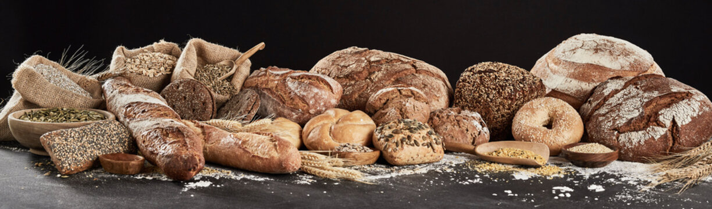

Bánh mì (tiếng Anh: bread) là thực phẩm được chế biến từ bột mì hoặc từ ngũ cốc được nghiền ra trộn với nước, thường là bằng cách nướng. Trong suốt quá trình lịch sử, bánh mì đã được phổ biến trên toàn thế giới và là một trong những loại thực phẩm nhân tạo lâu đời nhất, đóng vai trò rất quan trọng kể từ lúc ban đầu của ngành nông nghiệp. ...